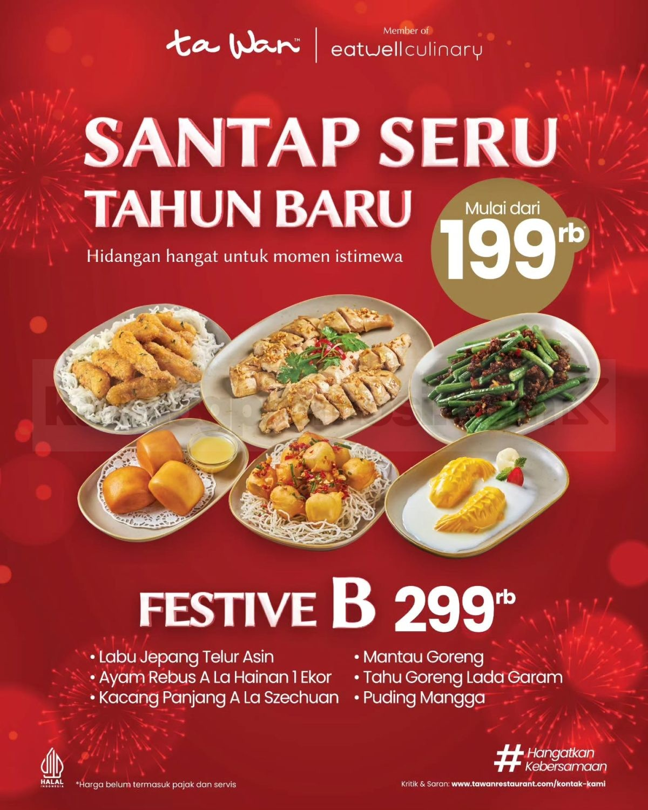

Promo Spesial

Waktunya Gajian, Serbu Pay Day Fortune di Ta Wan!
Rayakan momen gajian dengan memanjakan diri sendiri dan keluarga dengan paket hemat mulai Rp 179.000 untuk berdua hingga berempat.
Pilih promo favorit Anda dan baca informasi lengkap mengenai periode serta syarat & ketentuan yang berlaku.
Rayakan momen gajian dengan memanjakan diri sendiri dan keluarga dengan paket hemat mulai Rp 179.000 untuk berdua hingga berempat.

Di setiap meja ada cerita yang dibagi, di setiap hidangan hangat ada rasa yang mendekatkan. Selamat Hari Natal untuk seluruh Sobat Ta Wan!

Nikmati sensasi gurih saus kacang autentik dalam Mie Goreng Nyemek, Mie Szechuan pedas, hingga Ayam Saus Kacang Oriental.

Ayam charsiu dimasak sempurna dalam mangkuk tembikar (claypot), menjaga suhu panas dan rasa manis gurih meresap hingga ke serat terdalam.

Pudding lembut, hakau kukus, dan onde-onde renyah manis selalu siap menceriakan hari Anda saat rehat sejenak.

Semangkuk Mie Nyemek Saus Kacang hangat dengan topping ayam empuk dan sayuran segar, solusi makan siang menenangkan.

Dapatkan kombinasi lauk pilihan, sayuran segar, dan nasi hangat dengan potongan harga istimewa di seluruh cabang reguler.

Mengenang awal mula Ta Wan di tahun 1996, kami menghadirkan program apresiasi spesial untuk seluruh pelanggan setia.

Udang segar gurih berpadu dengan keasaman manis alami buah nanas segar, menciptakan rasa yang ringan, unik, dan menggugah selera.

Solusi praktis makan lezat di mana saja! Dapatkan bonus minuman segar untuk setiap pemesanan Rice Bowl favorit Anda.
Rayakan momen gajian dengan memanjakan diri sendiri dan orang-orang tersayang! Tak perlu bingung mencari tempat makan yang cocok untuk semua orang, Ta Wan hadir sebagai pilihan sempurna. Dengan memanfaatkan Promo Pay Day Fortune, gajian makin hoki, makan makin hemat. Paket spesial ini hadir mulai dari Rp 179.000* sudah mencakup sajian lauk favorit, hidangan sayur segar, dan berbagai menu pelengkap. Porsinya pas dinikmati berdua bahkan berempat!
Natal terasa jauh lebih istimewa ketika ditemani kehangatan keluarga. Di setiap meja Ta Wan, selalu ada cerita tulus yang dibagi dan tawa yang menghangatkan suasana. Di setiap hidangan panas yang tersaji, ada rasa cinta dan dedikasi koki kami untuk mendekatkan yang jauh dan mempererat yang dekat. Selamat Hari Natal untuk seluruh Sobat Ta Wan yang merayakannya!
Setiap suapan dari Peanut Series menghadirkan kehangatan tersendiri dengan gurihnya saus kacang pilihan dan manisnya kebersamaan. Nikmati pilihan menu spesial kami: 🍜 Mie Goreng Nyemek Saus Kacang — kuah kacang kental hangat berpadu mi kenyal lembut nan mengenyangkan. 🌶️ Mie Goreng Saus Kacang a la Szechuan — sensasi pedas khas yang menggigit berpadu aroma kacang gurih. 🍗 Ayam Saus Kacang Oriental — potongan ayam juicy berlumur saus kacang lembut manis gurih.
Daging ayam charsiu dimasak dengan kematangan sempurna, lalu disatukan dalam mangkuk claypot yang menjaga panas dan rasa tetap terkunci rapat. Saus merah karamelnya melekat halus, menghasilkan rasa manis gurih yang seimbang dengan jamur serta sayuran segar. Bukan sekadar lezat, hidangan ini menenangkan dan sempurna untuk momen bersantap di tempat (dine-in) di outlet pilihan Ta Wan.
Saat kamu menyantap dessert khas Ta Wan dan merasakan kelembutan serta kesegarannya yang luar biasa, jangan ragu untuk berbagi kebahagiaan tersebut kepada rekan dan keluarga! Tersedia aneka ragam pilihan puding sutra rasa almond, mangga, hingga cokelat kaya rasa yang disajikan dingin untuk menyegarkan kembali harimu.
Hangatnya kuah berpadu dengan gurih kentalnya saus kacang khas racikan Ta Wan—menghadirkan kelezatan yang menenangkan di setiap suapan. Topping suwiran ayam yang empuk serta potongan sayur segar menciptakan kombinasi rasa yang pas di lidah. Tersedia untuk makan di tempat maupun pesan bawa pulang (take-away) di outlet Ta Wan terdekat!
Kembali hadir paket favorit Sobat Ta Wan! Saat dompet baru terisi sehabis gajian, rayakan dengan hidangan bergizi dan mengenyangkan. Dapatkan paket lengkap dengan porsi dermawan khas mangkuk besar Ta Wan. Jangan lupa ajak sahabat, pasangan, dan keluarga untuk menikmati promo ini bersama-sama!
Dimulai dari kehangatan seporsi bubur hangat di tahun 1996, Ta Wan kini telah melayani jutaan momen kebersamaan masyarakat Indonesia di lebih dari 90 gerai. Ikuti program nostalgia kebersamaan kami di media sosial @tawanrestaurant dan raih kesempatan mendapatkan berbagai voucher makan gratis serta traktiran hidangan spesial!
Ada kalanya rasa terbaik hadir dari perpaduan yang tak biasa. Udang segar pilihan yang gurih renyah dipadukan bersama potongan nanas matang yang manis dan sedikit asam. Menciptakan sensasi rasa berbeda di lidah—ringan, menyegarkan, dan menggugah selera makan. Sajian yang sangat pas untuk menghangatkan momen santap siang Anda hari ini.
Solusi praktis dan cepat untuk menikmati kelezatan otentik Ta Wan di mana saja! Setiap pemesanan varian Rice Bowl Ta Wan favorit Anda via layanan pesan antar daring, nikmati kesegaran minuman dingin pendamping secara gratis. Hemat, lezat, dan mengenyangkan!